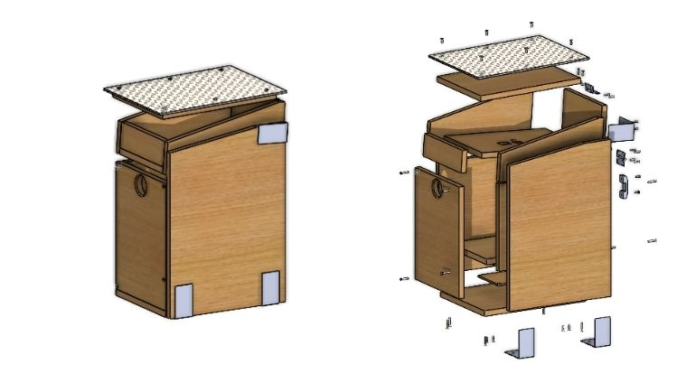

Connected Birdhouse
Icam Strasbourg-Europe • 2024
Development of a connected birdhouse that allows the user to access real-time data inside the birdhouse:
videos, images, weight, humidity, temperature, and sounds.
Role: Electrical Engineer
Skills: Teamwork, Robotics, CAD, Management

Project of Research and Development
Icam Strasbourg-Europe • 2025
Development of a program to automate the registration of future students attending the Green Belt, Black Belt,
and Lean Office courses proposed by Icam Pro Lean.
Role: Programming Engineer
Skills: Teamwork, VBA, Excel, Automation

My coding hobby
2018-Now
In my personal time, I design, assemble, and optimize custom computers, focusing on performance, reliability, and continuous improvement. Beyond hardware, I develop personal software tools and small applications to automate tasks, test ideas, and improve my workflow. This project strengthened my technical skills, problem-solving abilities, and creativity in both engineering and coding.
Skills: Coding, HTML, CAD, VBA, C+, Arduino, SQL, Java, Raspberry Pi, AI